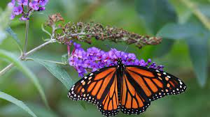

Las mariposas son indicadores de la calidad medioambiental y de la salud de los ecosistemas. Son un elemento muy importante en las cadenas tróficas y resultan fundamentales para muchas especies de aves, murciélagos y mamíferos insectívoros. ... Las zonas ricas en mariposas, son ricas también en otros invertebrados.
